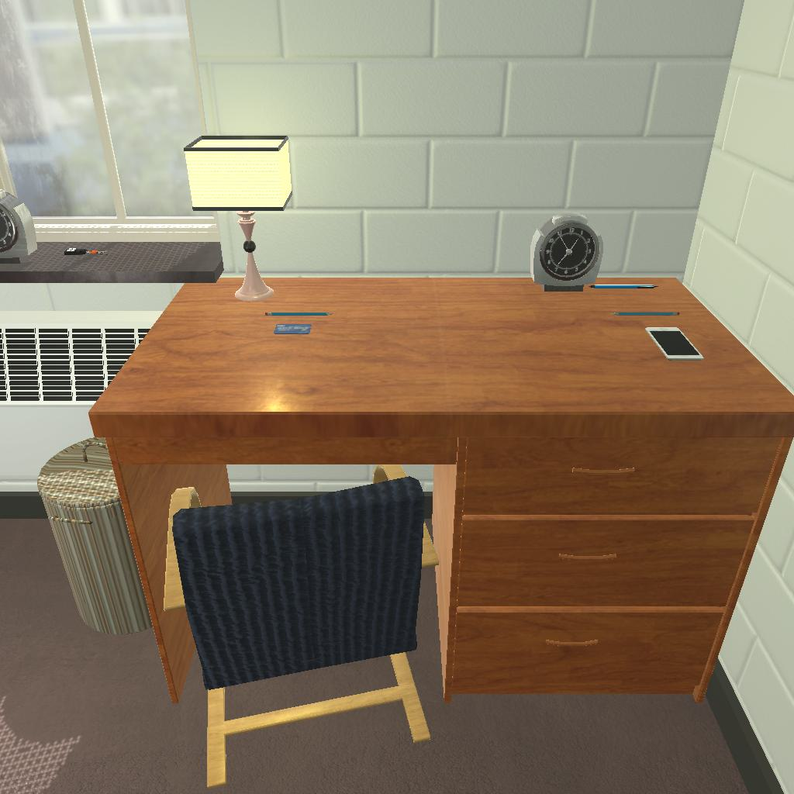

---------------------------------------------------------task: 8---------------------------------------------------------
--------------------------------------------------------------------------------------------------------------------------------------------------------------------
--------------------------------------------------------------------------------------------------------------------------------------------------------------------
Step:--------------------------------------------------------------------------10-------------------------------------------------------------------------------
----------------------------------------
VLM Prompt:
Image1:
Image2:
**Instruction**
1. Analyze the provided images to identify all visible household objects and compare the difference between images (e.h. whether the object is opened or not and taken on hand or not), focusing on those relevant to the task description "put a laptop in desk."
2. Use the analysis of images and the task hint "The agent must find an object of the desired type, pick it up, find the correct location to place it, and put it down there." to answer the question: what is the most reasonable action in the choices for the task description "put a laptop in desk"?
3. Decide and write the answer using the template: The answer is: (i): , where i is the real number. If there is no desired object in images, search every place based on **Initial Observation** to find the object. And if no one is exactly correct, choose a similar answer.
**Initial Observation**
You are in the middle of a room. Looking quickly around you, you can see bed (1), garbagecan (1), desk (1), sidetable (1), drawer (1-5), laundryhamper (1)
**Answer Choices**
(1): go to bed 1
(2): go to garbagecan 1
(3): go to desk 1
(4): go to sidetable 1
(5): go to drawer 2
(6): go to laundryhamper 1
(7): go to drawer 4
(8): go to drawer 5
(9): open drawer 3
(10): close drawer 3
(11): examine drawer 3
**Answer**
Let's think step by step by following the instructions.
----------------------------------------
----------------------------------------
Original Response:
Image Analysis:
In Image 1, we can see a sidetable with a CD case on it, and the reflection of a bed in the mirror. There is no laptop visible in this image.
In Image 2, we see a desk with various objects on it, including a lamp, a clock, some papers, and a smartphone. There is no laptop visible on the desk or in the immediate vicinity.
Based on the task description "put a laptop in desk," we need to find a laptop and place it on the desk. Since there is no laptop visible in either of the provided images, we need to search other places as per the Initial Observation.
Initial Observation Analysis:
The initial observation lists several household objects, including a bed, garbagecan, desk, sidetable, drawers, and a laundry hamper. Since the task is to put a laptop in the desk, our action should be directed towards finding the laptop.
Answer Choices Analysis:
The choices provided are various actions related to different objects in the room. Since we need to find a laptop, actions related to the bed, garbagecan, sidetable, and laundry hamper are not immediately relevant. The desk already has been shown in Image 2, and there is no laptop there. The drawers are a likely place to find a laptop, so the actions related to the drawers are worth considering.
The most reasonable action from the given choices, based on the task description and initial observation, would be to search the drawers. Since we do not have information on which specific drawer might contain the laptop, we should start with the one closest to the desk, which is drawer 3. The action to "examine drawer 3" would be the most appropriate next step to potentially find the laptop.
The answer is: (11): examine drawer 3.
----------------------------------------
----------------------------------------
>>> Refine Original VLM Response and Get Pure Action: examine drawer 3
----------------------------------------
-----------------------------------------------------------------
Running time: 16.15643000602722 seconds
Total Money: 3.284610000000002
-----------------------------------------------------------------
-----------------------------------------------------------------
Text Observation:On the drawer 3, you see a desklamp 1, a alarmclock 1, a laundryhamperlid 1, a alarmclock 2, a cellphone 1, a creditcard 1, a pen 1, a pencil 1, a pencil 2, and a keychain 1.
-----------------------------------------------------------------
UNSUCCEED